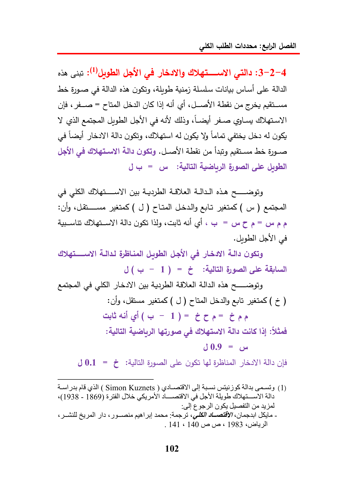

gillQuailodeJa)ayyAG(llaAllallodeAsie)=GIS13)ccAbyeYoilected)a)aDEY!cetLeadAlloalYyLelaasUdaalOScbAllaLaat)AbGyeLS=BylalotDIGyADL!Atal)odapS(J)ObAllacubalch=Us!AGL)JatAllaGigSig1)=By(4ASIgyoka«ineiS(J)aot(¢)cuai-—1)=EtenCeegiguaAllacals$4)Std30.9=SOL=YIJs!allogl4a!jasaldcll(SimonKuznets)Aaah59SAlayony(1)«(1938-1869)SUSVIAbgbgiAllaOSGsadpallGlo3)deneenyi-141«140ve1983«gall102